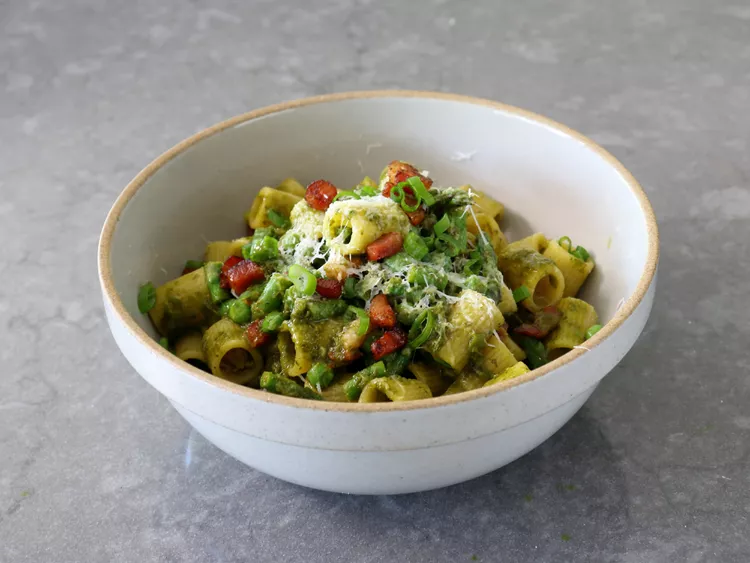

This pancetta primavera rigatoni really is a tremendous bowl of pasta. Thanks to the pancetta, it's rich and decadent, but thanks to all the herbs and veggies, it's also fresh and vibrant.
Every year about this time, you’ll see lots of pasta primavera recipes popping up on the internet, like spring flowers after a rain (or weeds in my case), and they are almost always done vegetarian. Not that there’s anything wrong with that, but the best way to make them not vegetarian is to add pancetta, also known as “Italian bacon,” and what results is a tremendously delicious bowl of pasta.
This features the rare combo of something that’s rich and decadent, but also fresh and vibrant at the same time. And yes, you can use regular bacon for this, although as I mentioned in the video, bacon is smoked and pancetta is not. Besides deciding on which cured meat, if any, you can also add any other seasonal vegetables to this, just as long as you cook them ahead, or cut them small enough to cook in the pasta water. No matter what you use, I loved the balance between the pancetta, veggies, and herbaceous sauce, and I really do hope you give it a try soon. Enjoy!
Prep Time: 20 mins
Cook Time: 20 mins
Total Time: 40 mins
Servings: 4
Pour 2 tablespoons of the olive oil to a large pan, and set heat to medium. Add diced pancetta, and cook, stirring occasionally, until pancetta is browned, and most of the fat has rendered out, 7 to 10 minutes. Turn off heat.
Remove some pancetta and reserve to garnish the top if desired. Pour out some of the excess pancetta fat from the pan if desired, but leaving at least 2 or 3 tablespoons.
Add green onions, and turn heat to medium-low. Sauté green onions for a few minutes to soften slightly, then turn off heat and reserve until pasta is cooked.
While pancetta is cooking, bring a pot of well-salted water to a boil. Add rigatoni, and set a timer for 2 minutes less than recommended cooking time for the pasta, or about 7 minutes for mezzi rigatoni. Stir occasionally.
Meanwhile, combine parsley, basil, mint, garlic, lemon juice, and water in the jar of a blender or a cup; blend in the blender or with an immersion blender until smooth. Set aside.
When timer rings, stir in asparagus and peas and continue cooking for 2 minutes, or until pasta is done to your liking. Use a strainer to transfer pasta and vegetables into the pan with pancetta.
Turn heat to medium-low and pour in herb mixture. Stir until combined. Season with salt, and drizzle in about 1 tablespoon olive oil. Add about 1/4 cup pasta water, and stir over medium-low heat until everything is hot.
Turn off heat, and stir in cheese. Taste for seasoning, and serve immediately. Garnish with more cheese, reserved pancetta, and more sliced green onions.
Enjoy!
Calories: 574
Fat: 44g
Carbs: 30g
Protein: 16g
Go to previous recipe.
Go to next recipe.
Go to home.